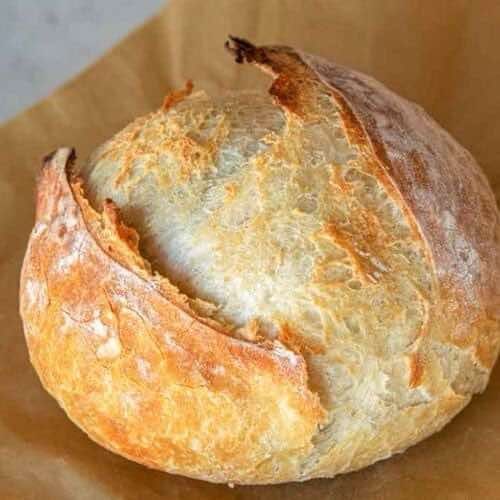

Home
Artisan Bread

Ingredients
- 5 cups Flour
- 2 1/2 cups Water
- 1 1/2 tsp Yeast
- 2 tsp Salt
Directions
- Mix all the ingredients in a bowl until well combined and let rest for 15 minutes.
- Stretch and fold the dough several times and let it rest for 30 minutes.
Repeat then let rest for an hour.
- Place the dough in the refrigerator to ferment for 12-48 hours.
- Preheat the oven to 500 F. Allow the dutch oven to preheat in the oven now as well.
- Place the dough on a large piece of parchment paper and bake it in the Dutch oven for 30
minutes with the lid on. Then reduce the temperature to 450, remove the lid and bake for
another 20 minutes.
- Remove the bread from the dutch oven and let it.